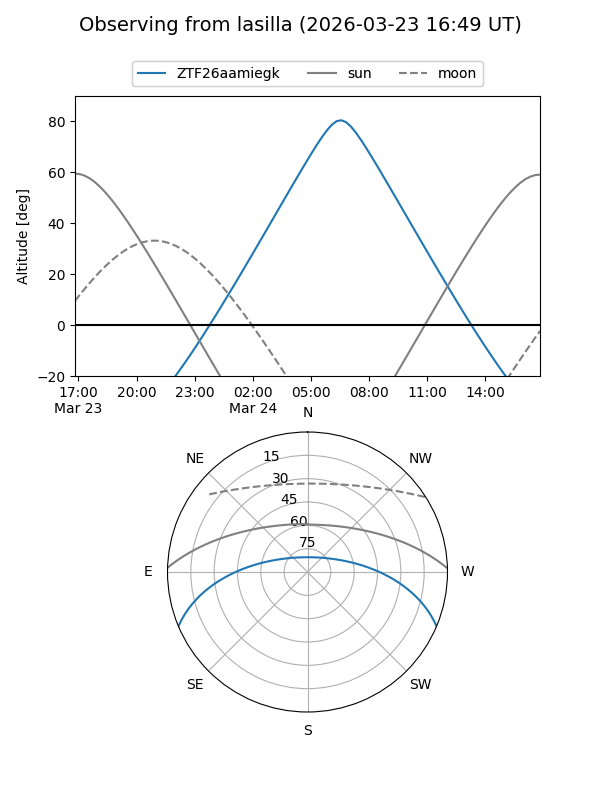
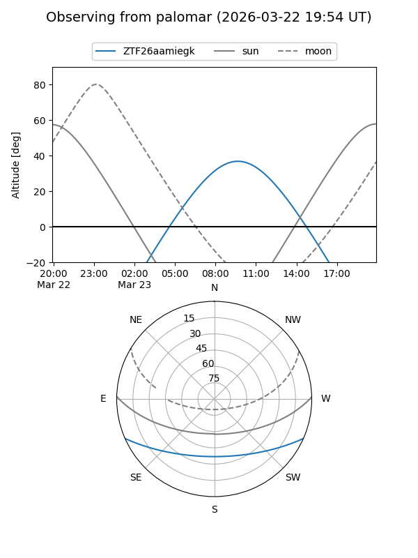

ZTF26aamiegk
Target ZTF26aamiegk at 2026-03-23 09:53
Aliases and brokers:
FINK: link
Lasair: link
ALeRCE: link
alt names
ZTF26aamiegk (ztf,fink_ztf)
Coordinates:
equatorial (ra, dec) = 208.5257,-19.62836
equatorial (HMS+DMS) = 13:54:06.17,-19:37:42.08
galactic (l, b) = (322.5771,+40.84069)
Flags:
Photometry:
last ztfg=17.09
1 ztfg detections
Lightcurve
Visibility


Additional plots